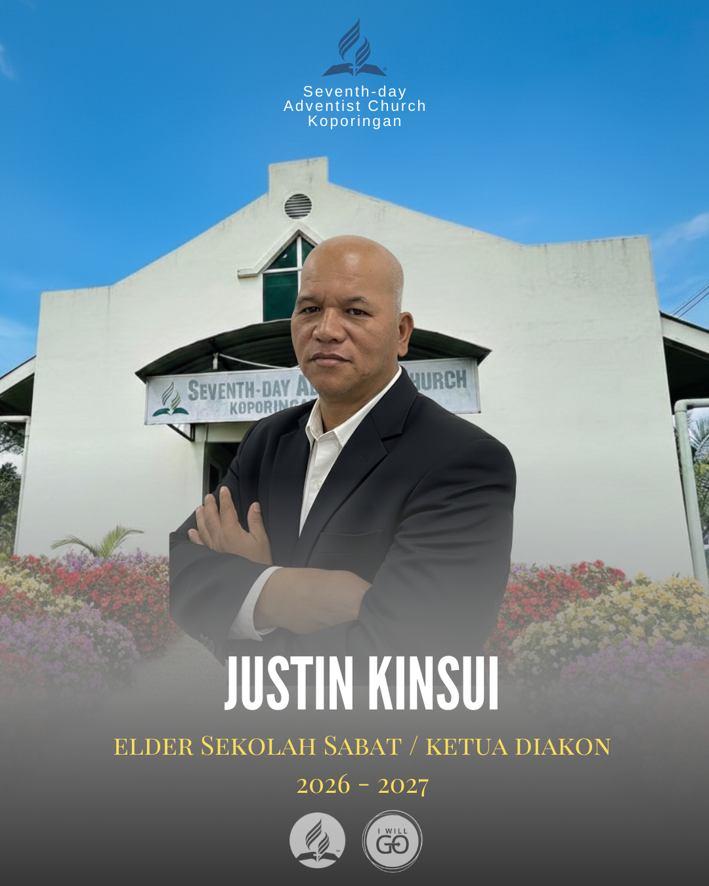
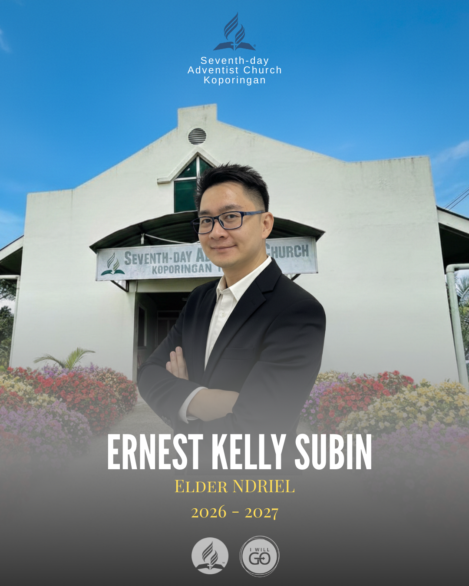

Di sini untuk melayani dan membimbing anda



Alamat:
Kampung Koporingan, 89257 Tamparuli, Sabah
Email:
gerejasdakoporingan@gmail.com
Sabtu: 9.00 am – 12.30 pm
Sekolah Sabat: 9.45 am – 11.45 am
AY: 3.00 pm – 4.00 pm
Rabu (Sembahyang Minggu): 7.00 pm – 8.00 pm